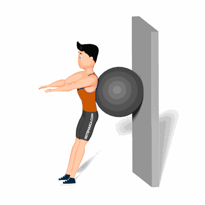

Agachamento com Bola

Com esse exercício teremos a pressão da bola em nossas costas (lombar), quadril, proporcionando um movimento mais dinâmico e intenso para o agachamento.
Ficha Técnica
Tipo: Musculação
Grupo Muscular: Perna
Aparelho: Nenhum
Músculos: Nenhum
Como realizar
- Posicione-se em pé com uma bola suíça atrás das costas e pressionada contra uma parede;
- Os pés devem estar ligeiramente na sua frente e alinhados com a largura dos ombros;
- Agache-se, mantendo os calcanhares apoiados no chão e os joelhos para fora, deixando que a bola suíça role entre suas costas e a parede;
- Mantenha os braços estendidos para que possa se equilibrar. Levante-se retornando à posição inicial.
 RC STORE
RC STORE